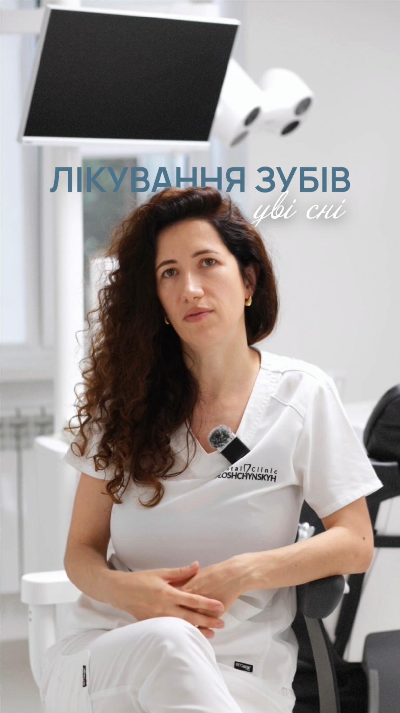

DENTAL CLINIC PLOSHCHYNSKYH
Технології з увагою
до людини.
Стоматологічний простір на Сихові. Для щоденної турботи про зуби та комплексних рішень.
ПРО НАС
Знайомство, з якого
починається довіра.
Клініка Площинських поєднує цифрову стоматологію, комплексне лікування та допомогу всій родині.
У своєму Instagram команда розповідає про понад 15 років досвіду, показує клінічні випадки й пояснює етапи лікування. Серед напрямів — лікування під мікроскопом, коронки та вініри, імплантація, ортодонтія, відбілювання й дитяча стоматологія.
Для пацієнтів, які приїжджають з-за кордону, клініка пропонує комплексне планування лікування. Можливості та тривалість візитів потрібно узгодити індивідуально.

ЗНАЙОМСТВО З КОМАНДОЮ
Орися
Площинська
Головний лікар
У матеріалах клініки Орися Площинська розповідає про лікування під седацією та відповідає на запитання пацієнтів.
Дивитися відео в InstagramФото з офіційної сторінки клініки.
КЛІНІКА БЕЗ ФІЛЬТРІВ
Більше знайомства.
Більше впевненості.
Команда, реальні клінічні випадки та відповіді лікарів — на нашій сторінці.
ВАША УСМІШКА ПОЧИНАЄТЬСЯ З РОЗМОВИ